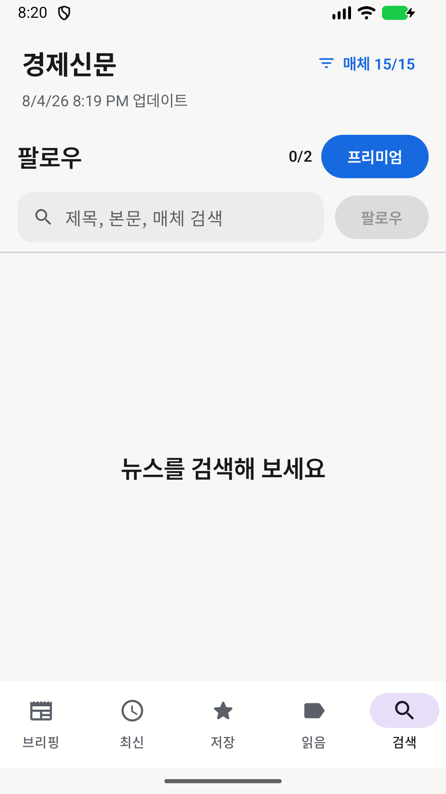

Android · iPhone
경제신문
여러 경제 매체의 뉴스를 한곳에서 읽는 올인원 경제 뉴스 리더입니다.



경제 흐름을 한곳에서 읽는 브리핑
최근 24시간 기사 제목에서 자주 함께 언급된 구체적인 키워드 다섯 가지를 카드로 보여주고, 키워드별 언급 횟수와 생성 시각을 확인할 수 있습니다.
브리핑부터 최신 뉴스까지 이어지는 흐름
전체 기사와 매체별 기사를 탭으로 나누어 살펴보고, 표시할 매체를 체크박스로 고르거나 모두 표시할 수 있습니다. 선택한 매체 필터는 최신 목록에만 적용됩니다.
- 24시간 핵심 키워드 다섯 가지 브리핑
- 전체·매체별 최신 기사 탭
- 제목·본문·매체 검색
- 관심 검색어 팔로우와 목록 관리
- 기사 저장·읽음 표시·공유·원문 링크
검색어를 지우고 팔로우 목록을 관리할 수 있으며, 기사 상세에서는 RSS에서 제공된 본문을 읽고 원문 링크를 열어 출처 언론사의 기사로 이동할 수 있습니다.
필요한 뉴스를 다시 찾는 읽기와 보관
기사를 저장하거나 읽음 상태로 표시하면 나중에 다시 찾을 수 있고, 공유 기능도 사용할 수 있습니다. 자동 동기화는 정해진 주기에 기사와 원격 피드 설정을 갱신하며 마지막으로 정상 저장된 데이터를 활용합니다.